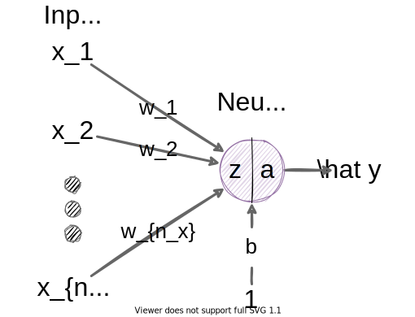

A concise neural network walk-through
Goal: provide a concise walk-through of all fundamental neural network (including modern deep learning) techniques.
I will not discuss every possible analogy, angle, or topic here. Instead, I will provide links to external resources so that you can choose which topics you want to investigate more closely. I will provide minimal code examples when appropriate.
Useful prior knowledge:
TODO: background
Application areas
Often considered the most important aspect of deep learning,
\[ \mathcal{D} = \{X, Y\} \]
is a dataset comprising input features \(X\) and output targets \(Y\). Although \(X\) and \(Y\) can come in many shapes, I am going to be opinionated here and use a specific (and consistent) convention. Let’s use \(N\) to denote the size of the paired dataset. (Note, not all problems have output targets, but herein I am talking about supervised learning unless otherwise specified.)
\(X\) is a matrix (indicated by capitalization) containing all features of all input examples. A single input example \(\mathbf{x}^{(i)}\) is often represented as a column vector (indicated by boldface)
\[ \mathbf{x}^{(i)} = \begin{bmatrix} x^{(i)}_{1} \\ x^{(i)}_{2} \\ \vdots \\ x^{(i)}_{n_x-1} \\ x^{(i)}_{n_x} \\ \end{bmatrix} \]
where \(n_x\) is the number of input features and \(i\) denotes the \(i^{\mathit{it}}\) training example}. We do not always put the input features into a column vector (see sec. 9 for more information), but it is a useful convention to remember.
Each row in \(X\) is a single input example (also referred to as an instance or sample), and when you stack all \(N\) examples side-by-side, you end up with
\[ X = \begin{bmatrix} \mathbf{x}^{(1)T}\\ \mathbf{x}^{(2)T}\\ \vdots\\ \mathbf{x}^{(N)T} \end{bmatrix} = \begin{bmatrix} x^{(1)}_{1} & x^{(1)}_{2} & \cdots & x^{(1)}_{n_x-1} & x^{(1)}_{n_x}\\ x^{(2)}_{1} & x^{(2)}_{2} & \cdots & x^{(2)}_{n_x-1} & x^{(2)}_{n_x}\\ \vdots & \vdots & \ddots & \vdots & \vdots \\ x^{(N-1)}_{1} & x^{(N-1)}_{2} & \cdots & x^{(N-1)}_{n_x-1} & x^{(N-1)}_{n_x}\\ x^{(N)}_{1} & x^{(N)}_{2} & \cdots & x^{(N)}_{n_x-1} & x^{(N)}_{n_x}\\ \end{bmatrix}. \]
We need to transpose each example column vector (i.e., \(\mathbf{x}^{(1)T}\)) into a row vector so that the first dimension of \(X\) is the number of examples \(N\) and the second dimension is the number of features \(n_{n_x}\). (This is not required, but it is the convention I will use for \(X\).)
Q: Why is \(X\)… (do this with a plugin?)
We say that \(\mathbf{x}^{(i)} \in \mathcal{R}^{n_x}\) (each input example is \(n_x\) real values) and \(X \in \mathcal{R}^{N \times n_x}\) (the entire input is a \((N, n_x)\) matrix).
\(Y\) contains the targets (also referred to as labels or the true/correct/expected output values).
\[ Y = \begin{bmatrix} \mathbf{y}^{(1)T}\\ \mathbf{y}^{(2)T}\\ \vdots\\ \mathbf{y}^{(N)T} \end{bmatrix} = \begin{bmatrix} y^{(1)}_{1} & y^{(1)}_{2} & \cdots & y^{(1)}_{n_y-1} & y^{(1)}_{n_y}\\ y^{(2)}_{1} & y^{(2)}_{2} & \cdots & y^{(2)}_{n_y-1} & y^{(2)}_{n_y}\\ \vdots & \vdots & \ddots & \vdots & \vdots \\ y^{(N-1)}_{1} & y^{(N-1)}_{2} & \cdots & y^{(N-1)}_{n_y-1} & y^{(N-1)}_{n_y}\\ y^{(N)}_{1} & y^{(N)}_{2} & \cdots & y^{(N)}_{n_y-1} & y^{(N)}_{n_y}\\ \end{bmatrix} \]
Each \(y^{(i)} \in \mathcal{R}^{n_y}\) (each target is \(n_y\) real values) and \(Y \in \mathcal{R}^{N \times n_y}\) (the entire input is a \((N, n_y)\) matrix).
For example, we might predict a person’s location on Earth in latitude, longitude, and altitude by looking at the temperature, illuminance, time of day, and day of year at their location. In this example, \(n_x\) and \(n_y\) are \(4\) (temperature, illuminance, time of day, and day of year) and \(3\) (latitude, longitude, and altitude), respectively. And if we have \(N=785\) example pairs, then \(X\) and \(Y\) are \((785, 4)\) and \((785, 3)\), respectively.
When our model is a single neuron we can only produce a single output. So, \(n_y=1\) for this section.
A diagram representing a single neuron (as we’ll see later, a neural network often refers to many of these neurons interconnected):

The diagram represents the following equations:
\[\begin{align} z^{(i)} &= \sum_{k=1}^{n_x} w_k x_k^{(i)} + b\\ a^{(i)} &= g(z^{(i)}) \end{align}\]
The main points of this equation:
Q: Why is there no superscript for \(w_k\) and \(b\)
For this model, we want to find parameters \(w_k\) and \(b\) such that the neuron outputs \(\hat y^{(i)} \approx y\) for any input. Before we discuss optimization we should take a moment to code up this single neuron model.
This code does not containing any “learning” (i.e., optimization), but it is worth showing just how simple it is to write a single neuron from scratch. Nearly all code is used to create random input data.
1 #!/usr/bin/env python
2
3 from math import exp
4 from random import uniform
5
6
7 def sigmoid(z: float) -> float:
8 """The sigmoid/logistic activation function."""
9 return 1 / (1 + exp(-z))
10
11
12 # The number of examples in our dataset
13 N = 100
14
15 # Randomly generate some input data
16 nx = 4
17 x1 = [uniform(-20, 40) for _ in range(N)]
18 x2 = [uniform(0, 1e6) for _ in range(N)]
19 x3 = [uniform(0, 24 * 60 * 60) for _ in range(N)]
20 x4 = [round(uniform(1, 365)) for _ in range(N)]
21
22 # Generate random neuron parameters
23 w1, w2, w3, w4 = [uniform(-1, 1) for _ in range(nx)]
24 b = uniform(-1, 1)
25
26 # Compute neuron output for each of the N examples
27 for x1i, x2i, x3i, x4i in zip(x1, x2, x3, x4):
28 zi = w1 * x1i + w2 * x2i + w3 * x3i + w4 * x4i + b
29 ai = sigmoid(zi)
In the example, we have random parameters and we ignore the output. But what if we want to train the neuron so that the output mimics a real function or process? The next subsection tackles this very problem.
You may have noticed that in the previous code listing I also introduced a specific activation function (aka squashing function) called sigmoid (aka the logistic function). In this section we’
Do this first
Deeper dive: TODO: something on activation functions.
https://nbviewer.jupyter.org/gist/joshfp/85d96f07aaa5f4d2c9eb47956ccdcc88/lesson2-sgd-in-action.ipynb
I provided reasonable ranges for values in the previous code example. For example, temperature values on Earth are typically in the range \([-20, 40]\) °C and illuminance in the range \([0, 1e6]\) Lux.
An NN can work with with values in these ranges, but it makes learning easier when you first scale values into the same range, typically \([-1, 1]\). TODO: why?
16 │ 16 │nx = 4
17 │ 17 │x1 = [uniform(-20, 40) for _ in range(N)]
18 │ 18 │x2 = [uniform(0, 1e6) for _ in range(N)]
19 │ │x3 = [uniform(0, 24 * 60 * 60) for _ in range(N)]
│ 19 │x3 = [(0, 24 * 60 * 60) for _ in range(N)]
20 │ 20 │x4 = [round(uniform(1, 365)) for _ in range(N)]
21 │ 21 │
│ 22 │# Randomly generate some target data
│ 23 │# Normally, this would be something that you measure
│ 24 │# or label by hand
│ 25 │ny = 3
│ 26 │y1 = 0
│ 27 │y2 = 0
│ 28 │y3 = 0
│ 29 │
22 │ 30 │# Generate random neuron parameters
23 │ │w1, w2, w3, w4 = [uniform(-1, 1) for _ in range(nx)]
│ 31 │w1, w2, w3, w4 = [uniformity(-1, 1) for _ in range(nx)]
24 │ 32 │b = uniform(-1, 1)
25 │ 33 │
26 │ 34 │# Compute neuron output for each of the N examples
recursive